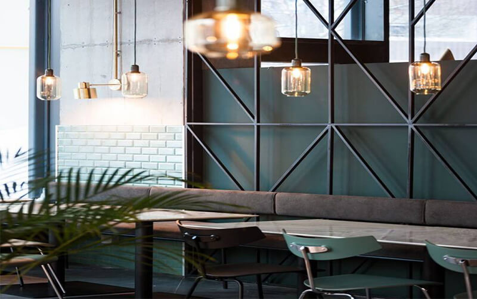
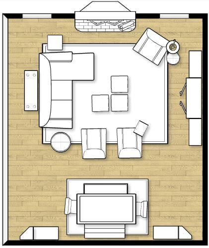
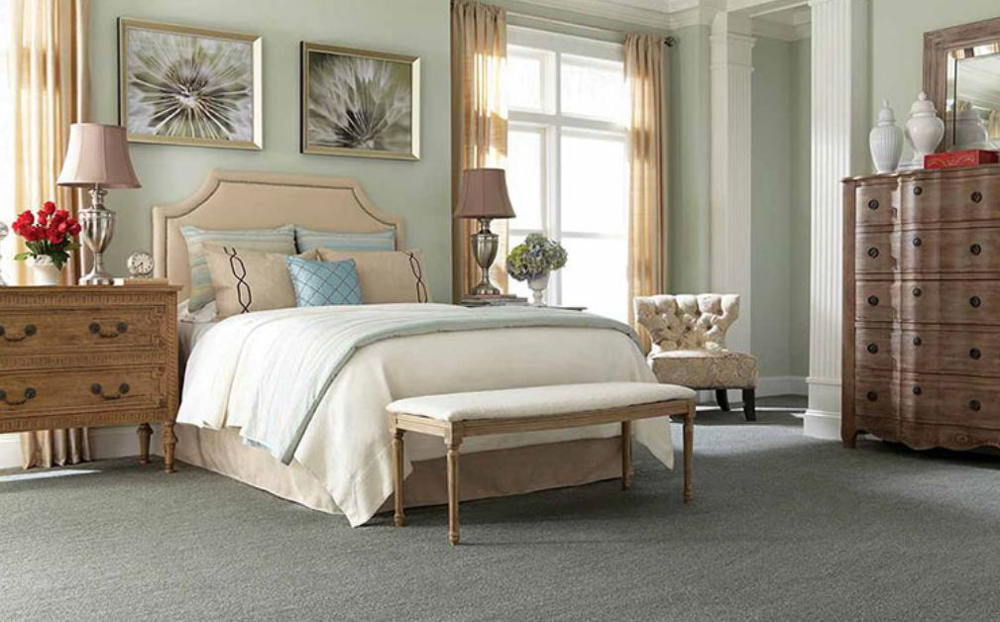
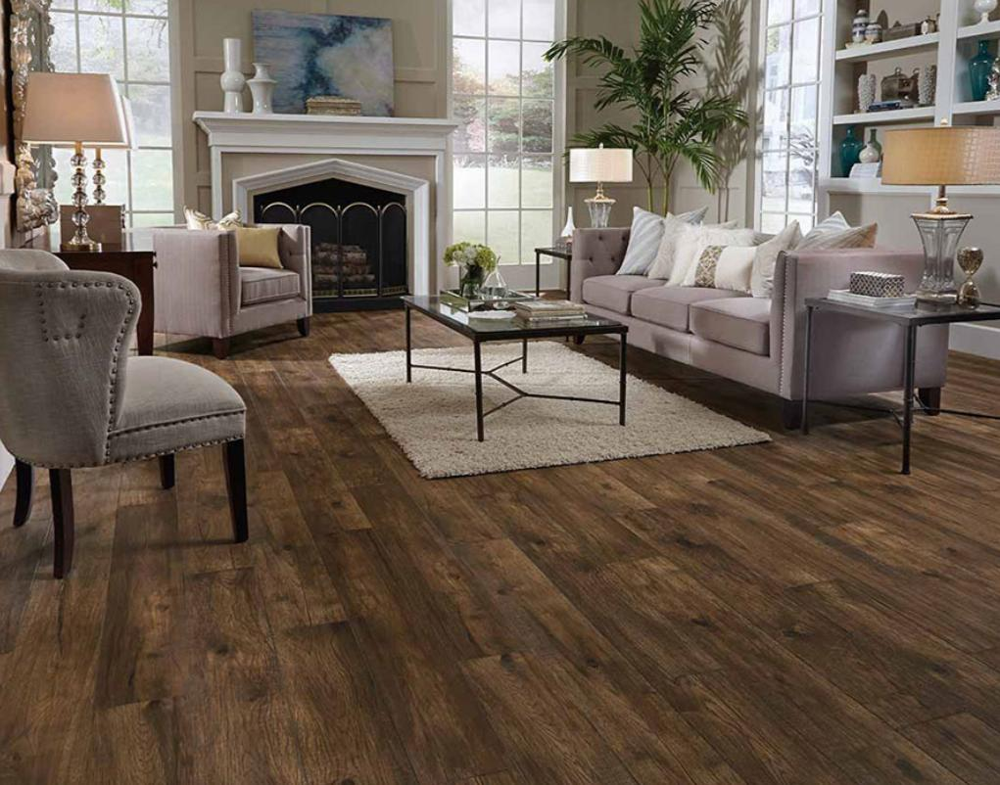

Three Importance steps in Interior Design

Simplicity. If you were looking for a word that described what modern home decor was then that would be; it is simplicity. Of course,
simple doesn’t mean boring and modern decor with its clean lines, neutral color palette and geometric shapes is anything but boring.
Instead, modern home decor can be warm, inviting and completely stylish in just about any home. But how do you achieve modern home
decor? Obviously, it isn’t as simple as walking into a store and choosing items that have clean lines. There takes a bit more to that and there
are several basic ideas that should be incorporated into a modern decor.
Pick an Appropriate Theme:

Before you start looking for specific pieces of furniture, the first thing you should do is pick an appropriate theme. Instead of approaching
each individual room in your home separately, you should pick a design style and apply it to every room in the house to create a cohesive
design. By choosing a theme, you make it that much easier for yourself to choose furniture that compliments each other. You need to make
sure that every piece of furniture in your home complements each other, and picking a central theme is the easiest way to do that.
There are a variety of design styles you can choose from. For example, a contemporary theme includes pieces of furniture that are metallic
and angular. On the other hand, a casual style will include pieces of furniture that give off a cozy and naturalistic feel with simple
accessories incorporated. Whichever style aesthetic you choose is up to you but making sure that your space is consistent between rooms
is important as it makes it easier for you to choose pieces that complement each other.
Pay Attention to Textiles and Textures:

After you have picked an overarching design style and begin shopping for furniture, the next thing you should consider is what each piece
of furniture is made out of. The textiles and textures of a sofa, chair or bedroom set are an extremely important factor that every homeowner
should consider. This is because certain textiles and textures last longer than others. For example, furniture made out of nylon, olefin, and
polyester tends to last longer than furniture made out of cotton, linen, and wool. Purchasing furniture that will last as long as possible should
be your number one priority when choosing furniture, given how expensive some pieces can be. The textiles and textures are a great
indicator of how long your furniture will last
Consider the Layout of Each Room:

The third and final factor to consider is the layout of each room. The dimensions, lighting, interior design, and spacing of each room are
extremely important to keep in mind. For example, it would make little sense to purchase large furniture for a small room or small
furniture for a large room. You want to make sure that the size of the furniture fits within the dimensions of the room that you are putting it in.
Additionally, try to make sure that the pieces of furniture purchased can fit together without being overcrowded. While price and design
are important factors when furnishing a home, there are other important factors that need to be considered as well. You should also be
considering what the furniture is made out of, whether or not it compliments other pieces in your home, and if it fits within the dimensions
of the space you are trying to create. As long as you keep these three factors in mind the next time you furnish a new home or redecorate
your current space, you will end up creating the perfect home.
For more example watch this vedio